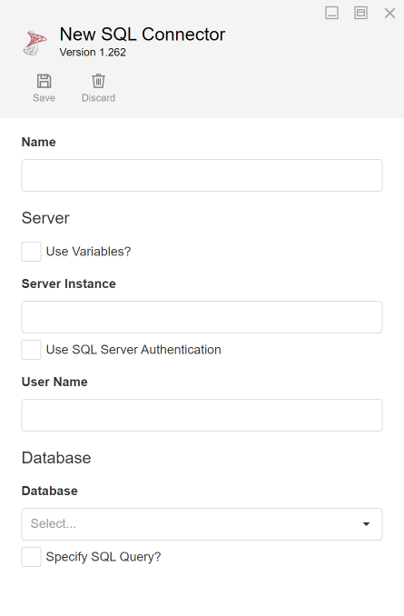
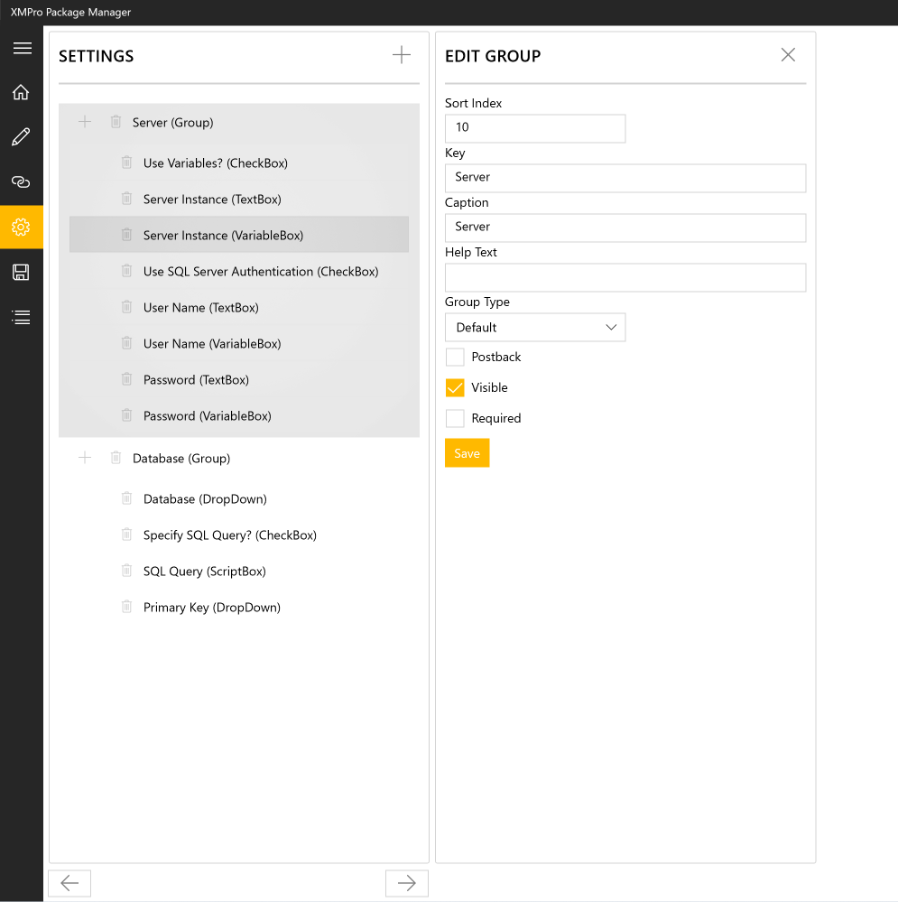

Building Connectors
Overview
To start developing a new Connector, create a new C# library project in Visual Studio and import the XMPro.Integration.Framework NuGet package. When writing the code for a Connector, you will have to implement one or more interfaces:
| Interface | Necessity | Description |
|---|---|---|
| IConnector | Required | Provides the structure implemented by all Connectors. |
| ILiveConnector | Optional | Allows the Connector to send notifications to the App Page to notify the change of entity. |
| IConnectorError | Optional | Allows the Connector to publish error messages to the Connector Logs. |
| ITSAConnector | Optional | Allows the Connector to advise the Time Series Analysis that the data is pre-processed and returned in buckets. |
| ITSCConnector | Optional | Deprecated from v4.4.12, upgrade to the ITSAConnector. |
IConnector
IConnector is the primary interface that all Connectors must implement as it provides the structure for the workings of the Connector. There are several methods required to implement this interface.

Settings/Configurations
Some Connectors need to be provided with configurations by the user. For example, for a SQL Connector to get records from a SQL Database, it needs the following:
- Server Instance
- User Name
- Password
- Database
Each of these settings should be referenced in the code and must correspond to the settings template created when packaging your Connector.
Note
A template is a JSON representation of all the controls and their layout that will be used to capture the settings from a user.
An example of the settings template (generated using the XMPro Package Manager) is shown in the image below. The settings in this example consist of the following controls:
- Group (Server)
- Textbox
- Checkbox
- Group (Database)
- DropDown
- ScriptBox

Each control has a Key, which uniquely identifies it in the template and allows the Connector code to access its value at any time. To get the value contained in a setting, use the following code:
string mySetting = parameters["myUniqueKey"];
Before a template is rendered on the screen, or if a postback occurs on any control in the template, the method below would be called to allow the Connector an opportunity to make any necessary runtime changes to the template, for example, verifying user credentials, displaying all tables of a selected database in a drop-down list, etc. In this example, no changes are being made to the template, but they can be added to the todo section if needed.
Note
For a postback to occur after a user navigates out of a setting field, the Postback property needs to be set to true when packaging the Connector.
public string GetConfigurationTemplate(string template, IDictionary<string, string> parameters)
{
//parse settings JSON into Settings object
var settings = Settings.Parse(template);
//populate the settings/configuration controls with the user selected values
new Populator(parameters).Populate(settings);
// ToDo: update the controls, values or the data sources here
//return the updated settings xml
return settings.ToString();
}
Entities
Each Connector must inform the Engine about the Entities that will be produced by the Connector. To do this, implement the following method:
public IEnumerable<Entity> GetEntities(IDictionary<string, string> parameters)
This method returns a collection of Entities, which represent an object or a function of the Connector. For example, an Entity can be a Table within the configured Database in the SQL Connector.
Each Entity contains the following:
| Name | Description | |
|---|---|---|
| EntityId | A unique identifier for the Entity. | |
| Name | The name of the entity. | |
| IsLive | Indicate if the Entity supports Live Updates. | |
| Operations | The operations which the Entity supports. |
new Entity("OpenRecommendation") { IsLive = True, Name = "Open Recommendation", Operations = Operation.Read };
Entity Properties
The Connector must provide a list of the Entity's properties, which describe its key, output schema, and optional inputs. To achieve this, implement the following method:
public Entity GetEntity(string entityId, IDictionary<string, string> parameters)
This method returns the Entity with a collection of properties for the selected Entity's entityId, which is passed as a parameter to this method.
Most properties will be Output properties, which describe the Entity's data, and are indicated by setting key and isParameter to false. For example, this String property named OutputString:
new Property("OutputString", Settings.Enums.Types.String, key: false, isParameter: false)
At least one property should be marked as the Entity's Key, indicated by setting key to true. The key uniquely identifies records when performing Update or Delete tasks, and for Application Blocks such as Grids that require a unique key per record. For example, this Long property named Id:
new Property("Id", Settings.Enums.Types.String, key: true, isParameter: false)
Finally, we have the optional Parameter properties, indicated by setting isParameter to true. They are included in the output schema, but also exposed to the App Page as optional input to the Read operation - retrieved from its options parameter to modify the results. For example, this Int property named Input:
new Property("Input", Settings.Enums.Types.Int, key: false, isParameter: true);
Note
Few Connectors need Parameter properties - they are used when the desired outcome is not achievable through the regular Configuration settings or the data source filter.
For example, the Azure Digital Twins Connector's Time Series entity includes an optional input parameter, "$ts", which shows up in the output as well as a Timestamp for that specific record/event.
Create
The Connector must implement a method called Create, which is invoked when your Connector is hosted. User-defined configuration is passed as a parameter to this method and should be stored in a class variable for later use. This is a good point to provide any resources needed for the working of your Connector.
void Create(Configuration configuration)
{
this.config = configuration;
// ToDo: Provision any resources or write Startup logic.
}
Read
The Read method is one of the Entities' operations and is expected to return a JToken back to the Engine. This method is invoked when a Read/Refresh Action is called from a Block within an App Page.
public IQueryable<JToken> Read(string entityId, OperationOptions options, out long count, JObject extraOptions = null)
This method contains a list of parameters being passed from the Engine.
| Name | Description | |
|---|---|---|
| entityId | A unique identifier for the Entity | |
| OperationOptions | The operation options as configured by a user:
| |
| count | The number of records | |
| extraOptions | A JObject contains the following:
|
Insert
The Insert method is one of the Entities' operations and is expected to return a JObject back to the Engine with the inserted record Id. This method will be invoked when an Insert Action is called from a Block within an App Page.
public JObject Insert(string entityId, JObject values, OperationOptions options)
| Name | Description | |
|---|---|---|
| entityId | A unique identifier for the Entity | |
| values | A JObject of values to be inserted | |
| OperationOptions | The operation options as configured by a user:
|
Update
The Update method is one of the Entities' operations and is expected to return a JObject back to the Engine with the updated record Id. This method will be invoked when an Update Action is called from a Block within an App Page.
public JObject Update(string entityName, JObject key, JObject values, OperationOptions options)
| Name | Description | |
|---|---|---|
| entityId | A unique identifier for the Entity | |
| key | A JObject containing the primary key of the record to be updated | |
| values | A JObject of values to be updated | |
| OperationOptions | The operation options as configured by a user:
|
Delete
The Delete method is one of the Entities' operations and is expected to return back to the Engine with the number of records deleted. This method will be invoked when a Delete Action is called from a Block within an App Page.
public int Delete(string entityId, JObject key, OperationOptions options)
| Name | Description | |
|---|---|---|
| entityId | A unique identifier for the Entity | |
| key | A JObject containing the primary key of the record to be deleted | |
| OperationOptions | The operation options as configured by a user:
|
Destroy
Each Connector must implement a Destroy method, which will be invoked when an App Page is closed. Use this method to release any resources or memory that your Connector may have acquired during its lifetime.
void Destroy()
Decrypting Values
If a Connector's configuration contains a Secure/Password Textbox, its value will automatically be encrypted. To decrypt the value, use the following set of instructions:
var request = new OnDecryptRequestArgs(value);
this.OnDecryptRequestArgs?.Invoke(this, request);
var decryptedVal = request.DecryptedValue;
Custom Events
While building your Connector, you may need to use external libraries or third-party event subscriptions to handle custom events. If these are used, you must catch any exceptions from the event handlers yourself, to prevent uncaught exceptions that could possibly crash the App Page if they get through.
ILiveConnector
The ILiveConnector interface allows the Connector to send notifications to an App Page to notify of a change to the entity. There are several methods required to implement this interface.
Subscribe
Subscribe is called by the Engine to inform the Connector that an App Page has been opened that uses Live Data from a given Entity (IsLive property set to true), and should be used to begin listening for changes to that entity. The Subscribe method has two overloads and can be used in the following ways:
- Use the first overload if you only want to pass the entity ID to the method.
public void Subscribe(string entityId)
- Use the second overload if you want to use filtering.
public void Subscribe(string entityId, OperationOptions options, JObject extraOptions)
Warning
The second overload is supported on App Designer v4.3.5 and XMPro.Integration.Framework v4.2 and above.
UnSubscribe
Unsubscribe is called by the Engine to inform the Connector that all AppPages that use Live Data from a given Entity have been closed, and should be used to stop listening for changes to that entity.
public void UnSubscribe(string entityId)
Publish
This method can be used to allow external changes to be passed to the Connector's internal entity tracking.
public void Publish(string entityId, Change[] changes, JObject options)
OnChange
To push the changes of entities to an App Page that subscribed to the live update, your Connector should invoke the OnChange event with the values of changes as arguments:
this.OnChange?.Invoke(this, new OnChangeArgs() { EntityId = entityId, Changes = changes.ToArray() });
IConnectorError
A Connector can publish messages to the Connector Logs by implementing the IConnectorError interface.
To log the error, your Connector should invoke the OnConnectorError event with the error information passed as arguments:
this.OnConnectorError?.Invoke(this, new OnErrorArgs(ConnectionId, Timestamp, Source, Error, DetailedError, Data));
ITSAConnector
v4.4.12: replaced the ITSCConnector interface, which is now deprecated.
The ITSAConnector interface notifies the Time Series Analysis to use optimized client-side querying to increase its performance. The Connector will pre-process the large volumes of data and return it in buckets.
When a Connector that implements the ITSAConnector interface is used with a Time Series Analysis Block, the Block expects the Connector to implement a specialized structure for data inputs and outputs:
- Implement Date Buckets by organizing the data into separate partitions based on specific time intervals, such as days, weeks, or months. Below is a of sample bucketed data with an interval of 2 hours:
| Bucketed Timestamp | Sensor1 | Sensor2 | Sensor3 | Original Timestamp |
|---|---|---|---|---|
| 2024-03-28 08:00:00 | 25.4 | 18.2 | 32.7 | 2024-03-28 05:36:17 |
| 2024-03-28 08:00:00 | 24.8 | 18.5 | 33.2 | 2024-03-28 07:12:45 |
| 2024-03-28 08:00:00 | 25.1 | 18.9 | 34.0 | 2024-03-28 08:58:21 |
| 2024-03-28 10:00:00 | 25.6 | 19.2 | 34.5 | 2024-03-28 09:27:54 |
| 2024-03-28 10:00:00 | 26.2 | 19.6 | 34.8 | 2024-03-28 10:44:30 |
| 2024-03-28 10:00:00 | 26.5 | 19.8 | 35.1 | 2024-03-28 11:15:01 |
| 2024-03-28 12:00:00 | 27.0 | 20.1 | 35.3 | 2024-03-28 12:21:59 |
| 2024-03-28 12:00:00 | 27.3 | 20.5 | 35.7 | 2024-03-28 13:33:42 |
| 2024-03-28 12:00:00 | 27.7 | 20.8 | 36.0 | 2024-03-28 14:07:29 |
| 2024-03-28 14:00:00 | 27.9 | 21.2 | 36.3 | 2024-03-28 15:08:11 |
- Replace the Original Timestamp with the Bucketed Timestamp value for final results. For example:
| Original Timestamp | Sensor1 | Sensor2 | Sensor3 |
|---|---|---|---|
| 2024-03-28 08:00:00 | 25.4 | 18.2 | 32.7 |
| 2024-03-28 08:00:00 | 24.8 | 18.5 | 33.2 |
| 2024-03-28 08:00:00 | 25.1 | 18.9 | 34.0 |
| 2024-03-28 10:00:00 | 25.6 | 19.2 | 34.5 |
| 2024-03-28 10:00:00 | 26.2 | 19.6 | 34.8 |
| 2024-03-28 10:00:00 | 26.5 | 19.8 | 35.1 |
| 2024-03-28 12:00:00 | 27.0 | 20.1 | 35.3 |
| 2024-03-28 12:00:00 | 27.3 | 20.5 | 35.7 |
| 2024-03-28 12:00:00 | 27.7 | 20.8 | 36.0 |
| 2024-03-28 14:00:00 | 27.9 | 21.2 | 36.3 |
Note
SQL and ADX have a native function to achieve this, DATE_BUCKET() for SQL and bin() for ADX.
Use the interface and implement buckets on any Connector to access the Time Series Analysis Block optimizations for your Data Source.
Example
The code below is an example of an empty connector. Take note of how the interfaces and methods have been implemented.
using Newtonsoft.Json.Linq;
using System;
using System.Collections.Generic;
using System.Linq;
using System.Text;
using XMPro.Integration.Framework;
using XMPro.Integration.Framework.Connector;
using XMPro.Integration.Settings;
namespace XMPro.Integration.NewConnector
{
public class NewConnector: ILiveConnector, IUsesVariable, IConnectorError, ITSAConnector
{
public long UniqueId { get; set; }
public event EventHandler<OnChangeArgs> OnChange;
public event EventHandler<OnErrorArgs> OnConnectorError;
public event EventHandler<OnDecryptRequestArgs> OnDecryptRequest;
public event EventHandler<OnVariableRequestArgs> OnVariableRequest;
private Configuration _config;
public void Subscribe(string entityId)
{
// Implement script for Subscribe method
}
public void UnSubscribe(string entityId)
{
// Implement script for UnSubscribe method
}
public void Publish(string entityId, Change[] changes, JObject options)
{
// Implement script for Publish method
}
public string GetConfigurationTemplate(string template, IDictionary<string, string> parameters)
{
var settings = Settings.Settings.Parse(template);
new Populator(parameters).Populate(settings);
return settings.ToString();
}
public IEnumerable<Entity> GetEntities(IDictionary<string, string> parameters)
{
this._config = new Configuration(parameters);
//Implement script for GetEntities method
return new List<Entity>() { { new Entity("0") { Operations = Operation.Read, IsLive = false, Name = "Name" } } };
}
public Entity GetEntity(string entityId, IDictionary<string, string> parameters)
{
return new Entity(entityId)
{
Properties = new List<Property>().ToArray(),
Operations = Operation.Read,
IsLive = false
};
}
public void Create(Configuration config)
{
//Implement script for Create method
}
public IQueryable<JToken> Read(string entityId, OperationOptions options, JObject extraOptions = null)
{
try
{
//Implement script for Read method
return Enumerable.Empty<JToken>().AsQueryable();
}
catch (Exception e)
{
this.OnConnectorError?.Invoke(this, new OnErrorArgs(123, DateTime.UtcNow, nameof(Read), e.Message, e.ToString()));
return Enumerable.Empty<JToken>().AsQueryable();
}
}
public JObject Insert(string entityId, JObject values, OperationOptions options)
{
//Implement script for Insert method
}
public JObject Update(string entityId, JObject key, JObject values, OperationOptions options)
{
//Implement script for Update method
}
public int Delete(string entityId, JObject key, OperationOptions options)
{
//Implement script for Delete method
}
public void CommitTransaction(string transactionName)
{
//Implement script for CommitTransaction method
}
public void Destroy()
{
//Implement script for Destroy method
}
}
}
Further Reading
Last modified: August 22, 2025